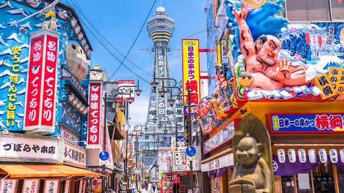

Osaka
Welcome to Japanese Traditional Place!
After Tokyo, the most famous place in Japan is Osaka! Osaka is a Japanese city that existed historically before Tokyo. Therefore, it has more traditional buildings than Tokyo, allowing you to enjoy a different scenery than in Tokyo.
